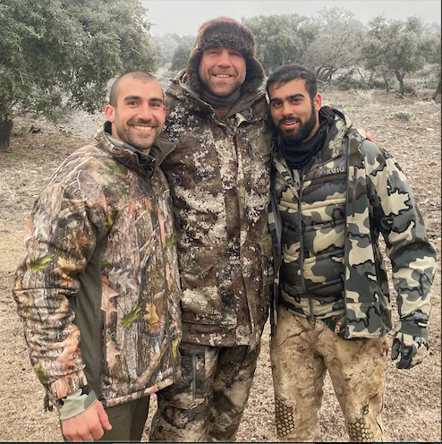
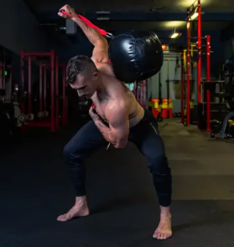

B415 · Sacred Hunting, Rite Of Passage Opportunity Coming Up
Hi {first_name},
A few months ago, you may recall I shared about my first Sacred Hunting Immersive Experience with Mansal Denton and Kyle Kingsbury.

A few of the reasons why I chose to go on the trip:
I'm honored to announce that Mansal Denton is offering this as a private experience for our community, November 5-7th in the Hill Country of Texas.
This will be a very small intimate group, and there are only 3 spots left.
There is also lots to prepare for ahead of time, which is why I am announcing it now. Mansal has a fantastic online preparation program that will get you ready logistically, as well as support you get the most out of this experience mentally, emotionally, and spiritually.
Additionally, as a special addition, in the 6-8 weeks before you will receive from me, a hunting-specific physical preparation program.
Please go to www.SacredHunting.com as soon as possible if you're interested to fill out an application. You will hop on a call with Mansal for more detail and screening to see if you are a good fit for this experience.
If you're ready for a life-changing experience, and to grow as a more whole person, we'd love to have you. ⠀ Best, Mike
P.S. This month's 90 minute workout is on the Suples Ball! If you have this training tool, or have been waiting to get one, now is the time. I will teach you the fundamentals, as well as take you through a fun workout at the end. Click here for details.
 |